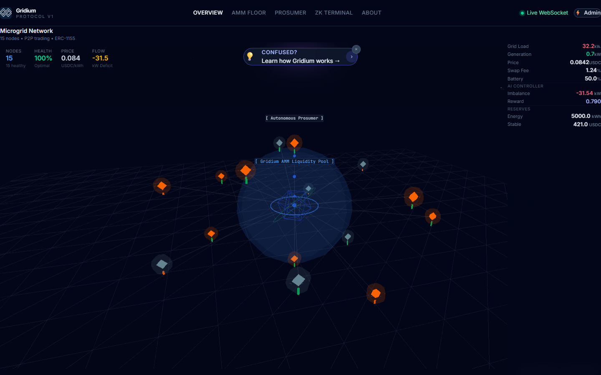
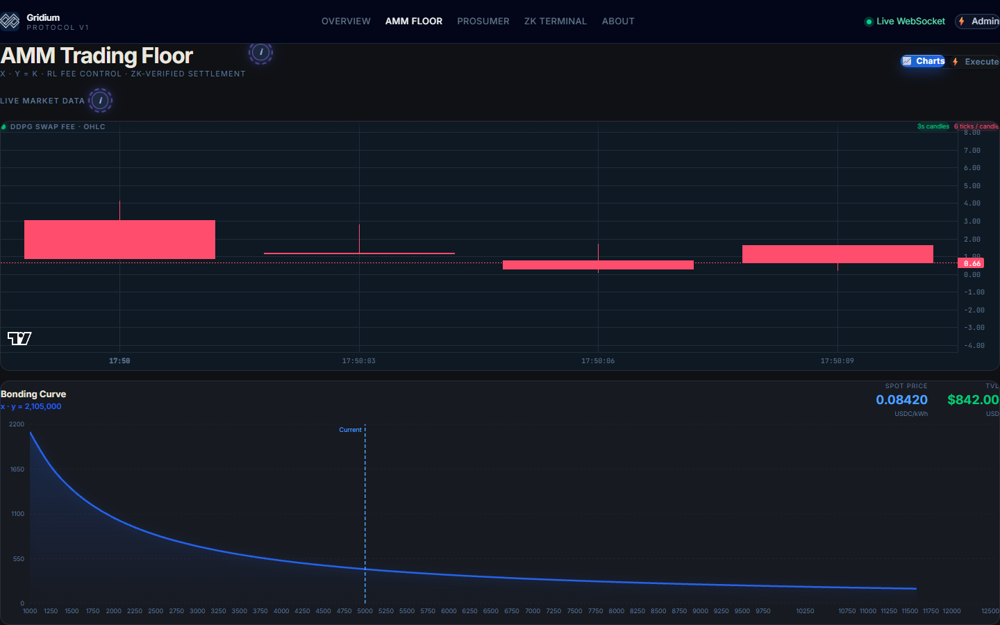

15-node Ohm's Law Microgrid
Models synthetic photovoltaic irradiance curves, residential duck-curve load, and battery State of Charge (SoC bounded between 20% and 80%) across 15 interconnected prosumer nodes.
Autonomous Microgrid Economy & Continuous RL Control
A distributed DePIN microgrid architecture pairing a 15-node Ohm's law physics simulation, continuous-control PyTorch DDPG actor-critic agent, high-frequency 500ms Socket.io gateway, constant-product EVM energy AMM, and off-chain Groth16 zero-knowledge proof verification.
Traditional electrical distribution networks are brittle and centralized. As residential solar arrays and home battery systems proliferate, uncoordinated peer-to-peer (P2P) trading introduces physical grid instability (such as synchronized trading triggering localized brownouts) and severe privacy vulnerabilities (public blockchain ledgers exposing private occupancy patterns based on power draw).
Gridium addresses this by orchestrating a closed feedback loop: a custom Python physics environment simulates real-world solar generation curves, residential duck-curve load profiles, and battery state of charge (SoC). A Deep Deterministic Policy Gradient (DDPG) agent continuously steers an Automated Market Maker (AMM) via dynamic swap fees, while Groth16 zk-SNARK circuits mathematically prove surplus energy off-chain without broadcasting raw sensor telemetry.
I architected the FastAPI physics simulation loop (AegisEnv), engineered the continuous PyTorch DDPG actor-critic pipeline, integrated the Node.js Socket.io state gateway, and built the hardware-accelerated 3D microgrid topology in React Three Fiber. Yash Pandit spearheaded Solidity smart contracts and Circom zk-SNARK circuits; Sanket Deka engineered the frontend dashboard UI and telemetry charts.
Each runtime is decoupled behind a narrow, fault-tolerant interface. That separation ensures high-frequency physics simulation, browser rendering, proof generation, and EVM contract execution operate without blocking each other.
Models synthetic photovoltaic irradiance curves, residential duck-curve load, and battery State of Charge (SoC bounded between 20% and 80%) across 15 interconnected prosumer nodes.
Maps a 7-dimensional observation vector into a continuous swap fee. Experience replay memory and Polyak soft target updates (τ = 0.005) prevent market fee whiplash.
Energy tokens and USDC reserves adhere to the x × y = k invariant. Non-reentrant swap methods, slippage boundaries, and dynamic fee accrual protect reserve liquidity.
Compiled via Circom 2.0; proves amount_to_sell = total_solar - total_load off-chain via snarkjs, submitting proofs to SurplusVerifier.sol without revealing raw consumption.
[total_load, total_generation, net_imbalance, energy_reserve, usdc_reserve, spot_price, mean_battery_soc]swap fee ∈ [0.10%, 5.00%]R = -α(imbalance²) - β(fee_volatility) + γ(reserve_depth)At every 500ms physics tick, AegisEnv normalizes power telemetry into an observation vector St. Market pricing is never analyzed in isolation from physical battery reserves and net generation deficit.
Discrete action algorithms (like DQN) cause severe fee oscillation. The DDPG actor outputs a continuous value mapped smoothly via sigmoid scaling to a stable fee between 10 and 500 basis points.
actor(S_t) → μ(S_t) + OU_noise → 0.001 + normalized_action × 0.049The Critic network minimizes Mean Squared Bellman Error. Replay buffers decouple temporal correlation, while slow target network tracking (τ = 0.005) guarantees training convergence under volatile power spikes.
The Node gateway polls the FastAPI engine /tick endpoint every 500ms, immediately broadcasting serialized telemetry across Socket.io to synchronize Zustand stores and React Three Fiber rendering loops.


Enforces the constant-product invariant ($x \cdot y = k$) for instant liquidity. Features strict slippage protection parameters, emergency pause functionality, and OpenZeppelin ReentrancyGuard.
Only the verified RL_OPERATOR_ROLE can push updated swap fees to the smart contract, with on-chain clamping between 0.10% and 5.00% to prevent rogue actor exploitation.
Circom circuit verifies that private solar generation exceeds private home consumption without revealing household telemetry, generating a Groth16 proof validated by SurplusVerifier.sol.
The circuit mathematically validates the arithmetic surplus balance ($E_{surplus} = E_{gen} - E_{load}$). Full industrial deployment would require hardware secure enclaves (TEE) or cryptographic smart meters to attest to physical sensor authenticity.
| Subsystem | Source Path | Primary Responsibility | Technical Implementation Detail |
|---|---|---|---|
| Physics Engine | ai-engine/aegis_env.py | Grid state, battery dynamics, load simulation | Custom Gymnasium environment, Ohm's law impedance, duck curve |
| DDPG Controller | ai-engine/ddpg_agent.py | Continuous actor-critic policy optimization | PyTorch, Ornstein-Uhlenbeck noise, Polyak target updates (τ=0.005) |
| Realtime Server | ai-engine/main.py | State serialization & chaos injection | FastAPI 500ms tick loop, REST endpoints, disturbance triggers |
| Gateway Bridge | backend/index.js | Telemetry fan-out & proof routing | Express, Socket.io, snarkjs proof generation, event replay buffers |
| AMM Contract | contracts/AegisAMM.sol | Token swaps & liquidity pool custody | Solidity 0.8.20, constant-product invariant, AccessControl, ReentrancyGuard |
| ZK Circuit | circuits/energy_proof.circom | Private surplus arithmetic relation | Circom 2.0, Groth16, R1CS constraint generation, snarkjs verification |
| 3D Command Center | frontend/src/components/MicrogridCanvas.tsx | Spatial topology & flow visualization | React 18, React Three Fiber, GLSL shaders, Zustand reactive store |
Deploy a deterministic comparative benchmark pitting DDPG against traditional PID and Model Predictive Control (MPC) across standard IEEE 33-bus test feeder topologies.